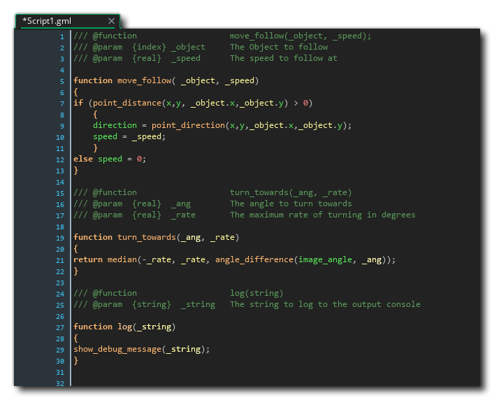

Scripts are essentially a collection of one or more user defined functions or variables that you write yourself as short snippets of code. The functions you define can resolve expressions, return values or do anything else that the GameMaker Language permits. Essentially, if you have a block of code that you use in more than one place or object, then it's probably better off as a function, and if that function is used across multiple objects, then it's probably better off in a script, as using scripts means that you can change the function just once when required and the change will be "picked up" by every object that has a call to the function. Scripts can also be very handy from an organizational point of view, as they permit you to create groups of functions that all work within the same space, for example, you might have several functions all related to collisions between instances in your game, so you would create a "Collision_Functions" script and store all these functions together in that.
When creating a script with functions in it, the functions must be created using the following format:
function <name> ( <parameter1>,
<parameter2>, etc... )
{
<statement1>;
<statement1>;
...
}
We also recommend that you add comments to define the properties of
the function (see the section on JSDoc
Comments for more details), such that a simple script would
look like this:
///
@function log(message);
/// @param {string}
message The message to show
///
@description Show
a message whenever the function is called.
function log(message)
{
show_debug_message(message);
}
Additional functions for the script can be added using the same
format as shown above, one after the other within the script asset.

Functions in scripts can also return a value, just as they can when used in-line in objects, and as such they can be used in expressions. For this you would use the return statement:
return <expression>
It should be noted that the execution of the function ends at
the return statement, meaning that any code which comes after
the return has been called will not be run. Here is a short
example function from a script called "sqr_calc" which calculates
the square of whatever value is passed to it, and it includes error
catching in case the parameter that it is passed is not a real
number:
///
@function sqr_calc(val);
/// @param {real} val
The value to calculate the square of
///
@description Calculate
the square of the given value
function sqr_calc(value)
{
if !is_real(value)
{
return 0;
}
else
{
return (value *
value);
}
}
To call a script function from within a piece of code, just use it
the same way as when calling any other in-line or runtime function
- that is, write the function name with the parameter values in
parentheses. So, the above script would be called like this:
if keyboard_check_pressed(vk_enter)
{
val = scr_sqr(amount);
}
Finally, it is very important to realise that scripts are parsed on
a global level and will be compiled at the very start of the
game. This means that technically all functions in a script are
"unbound" method
variables, and any variables declared outside of a function in
the script will be considered global variables. For
example, consider this script:
function Foo()
{
// Do something
}
blah = 10;
function Bar()
{
// Do something else
}
In the above case, not only have we defined the functions
Foo and Bar but also the variable blah
and all of them are considered to have been created in the
global scope. The functions don't need the global
keyword to be recognised as the compiler understands that these
functions are part of the script, but if you wanted to access
blah then you would need to do:
val = global.blah;
That said, we recommend that you always explicitly type global
variables when creating them in scripts to prevent any issues
later. This also means that if you want to use scripts to
initialise variables on an instance scope then you must wrap them
in a function, for example:
///
@function init_enemy();
///
@description Initialise
enemy instance vars
function init_enemy()
{
hp = 100;
dmg = 5;
mana = 50;
}
Functions can also take variable number of arguments, but for that
you must used the argument[0 ... n] array for the function
parameters, as named parameters will not work correctly (although
you can mix named parameters with the argument array).
You can then use the built in variable argument_count to check for
these extra parameters. For example:
///
@function create_random(object,
layer);
/// @param {int} object
The object to create an instance of
/// @param {int} layer
OPTIONAL! The layer to create it on
///
@description Create
an instance of the given object at a random position on the current
layer or on the (optional) given layer
function create_random(_obj)
{
var _layer = layer;
if argument_count > 1
{
_layer =
argument[1];
}
var _x = irandom(room_width);
var _y = irandom(room_height);
instance_create_layer(_x, _y, _layer,
_obj);
}
See the section on argument_count for more
information:
It is worth noting that when writing your own functions from
scripts in the code editor, you can press  or click the middle mouse button
or click the middle mouse button  on the function name to open the script that contains
it for editing directly.
on the function name to open the script that contains
it for editing directly.
It is important to understand that script names are independent of the functions that they contain, so you can name your scripts in a more "common sense" way, ie: all your AI functions could go in a script "Enemy_AI" (following the standard asset naming conventions of alpha-numeric characters and the underbar "_" only). However, you can still call scripts in your game - and you can name scripts the same as a function that you define in them - which can give rise to a issues due to the way that GameMaker Studio 2 stores asset references. To give an example consider this code, called from an instance:
function indirectCall(func, arg)
{
func(arg);
}
indirectCall(myscript, arg);
The above code is attempting to call a script called "myscript"
within an in-line function, which in this case will fail. This is
because the in-line function is actually using the index for the
script asset and not actually calling the script - eg: if
the script index resolves to 4, essentially the function is calling
4(arg);, which makes no sense. The code should instead be
structured in one of the following two ways:
function indirectCall(func, arg)
{
func(arg);
}
indirectCall(method(undefined, myscript), arg);
// OR
function indirectCall(func, arg)
{
script_execute( func, arg);
}
indirectCall(myscript, arg);
If you are developing for Web (ie: targeting HTML5), then there is
an additional function protocol that you can use when adding
functions to scripts, which is to prefix a function name with
gmcallback_, for example:
gmcallback_create_button
Using the above function name would mean that the function
gmcallback_create_button() will not be obfuscated and so
can be used in JavaScript extensions and other areas of your game,
for example, when using the clickable_*
functions.